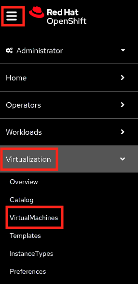

Tenant VMs Deployment
In this section, you will be creating three VMs using OpenShift Virtualization with the names tcn1.lab.example.com, tcn2.lab.example.com, and tcn3.lab.example.com.
Prerequisites
-
Ensure that all sno clusters i.e. Infrastructure clusters are deployed and available.
Sample output:[root@hypervisor ~]# oc get ManagedCluster NAME HUB ACCEPTED MANAGED CLUSTER URLS JOINED AVAILABLE AGE local-cluster true https://api.hub.lab.example.com:6443 True True 3h14m sno1 true https://api.sno1.lab.example.com:6443 True True 164m sno2 true https://api.sno2.lab.example.com:6443 True True 124m sno3 true https://api.sno3.lab.example.com:6443 True True 68m
-
Ensure that the OpenShift Virtualization operator is installed on Infrastructure clusters.
-
Download the
virtctlcommand line tool from any SNO’s console.-
Visit the web console home page of
sno1cluster. -
Click ? and select
Command Line Tools. -
In this page, scroll down to the
virtctl - KubeVirt command line interfacesection.Select the
Download virtctl for Linux for x86_64to open a download link in a new tab.Click Advanced… to proceed.
Click Accept the Risk and Continue to proceed and download the
virtctlcommand line tool on hypervisor.
-
-
Extract the archive of
virtctlcommand line tool.tar -xzvf /root/Downloads/virtctl.tar.gz -
Move
virtctlbinary to the/usr/local/bindirectory.mv virtctl /usr/local/bin/
Tenant VMs Deployment
-
Access the web console of sno1 cluster.
From the left navigation pane, click .
 -
Create a virtual machine from template.
Click
-
Search
rhel9in the template catalog.Select the
rhel9bootable source template from the catalog. -
This is the VM create window.
-
Scroll down in the VM create window and update the disk size from 30GB to 120GB.

-
Scroll down in the VM create window and edit the CPU and memory.
-
Set the 16 cores as CPU and 32GB as memory.
Click Customize VirtualMachine to customize the virtual machine.
-
In the virtual machine’s overview tab, edit the virtual machine name.
-
Get the virtual machine’s name from
/etc/dhcp/dhcpd.conffile. -
Set the virtual machine name as
tcn1.lab.example.com. -
To update the network interface, change the tab to the network interfaces tab.
-
Edit the network interface of the virtual machine.
Network: Bridge network (in the previous chapter you created the network attachment definition)
Get the mac address for virtual machine from
/etc/dhcp/dhcpd.conffile. -
Update the mac address of the virtual machine.
-
Ensure that all the network interface related details are updated.
Click Create VirtualMachine to create the VM and start the VM.
-
-
In VM’s overview tab, you can see that the virtual machine is in running state.
-
Once the VM is booted, ensure that the IP address and the hostname is assigned as per the
/etc/dhcp/dhcpd.conffile.